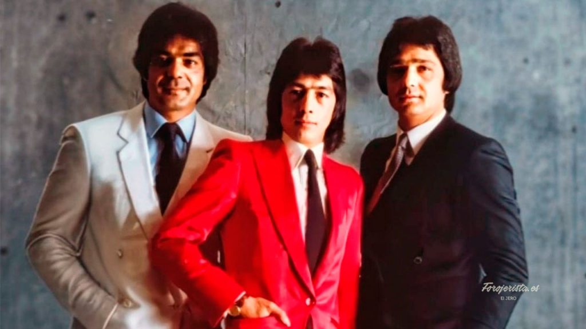

Biografía
Juan Antonio Jiménez Muñoz, más conocido como Jeros, fue el principal compositor y vocalista del legendario grupo Los Chichos. Nacido en Valladolid en 1951, su voz y sus letras revolucionaron la rumba española en los años 70 y 80. Jeros destacó por su capacidad única para contar historias de la calle y sentimientos intensos, reflejando en sus canciones la vida cotidiana, la lucha y las esperanzas de varias generaciones. Su paso por Los Chichos dejó huella indeleble en la música popular y consolidó su figura como uno de los grandes referentes de la rumba moderna en España.
Momentos clave
- Debut con Los Chichos (1974).
- BSO Yo, el Vaquilla (1985).
- Carrera en solitario (1990–1992).